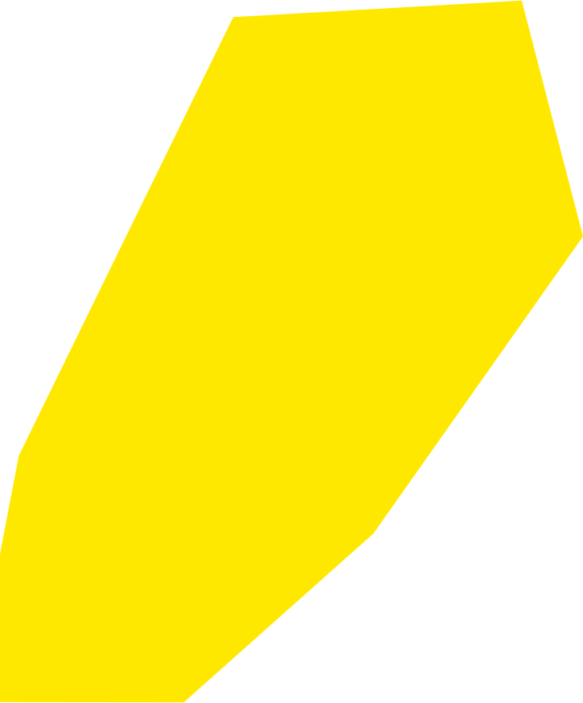
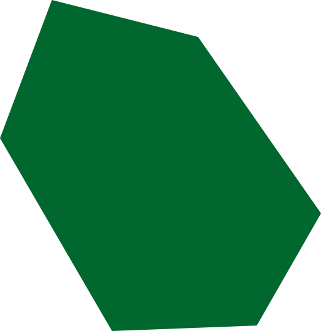

<div class="relative h-[1000px] overflow-clip bg-amber-500 my-6 ">

    
       
    

    

    

    
    
    
    
  <div class="absolute inset-0 z-100 flex items-center justify-center">
        <p class=" text-center text-[24px] lg:text-[48px] leading-tight text-[#EFECEA] font-semibold md:hidden lg:block">We help you set</br> focus and gain </br> impact. By adding </br> to the conversation,</br>not to the noise.</p>
  </div>
</div>

 
